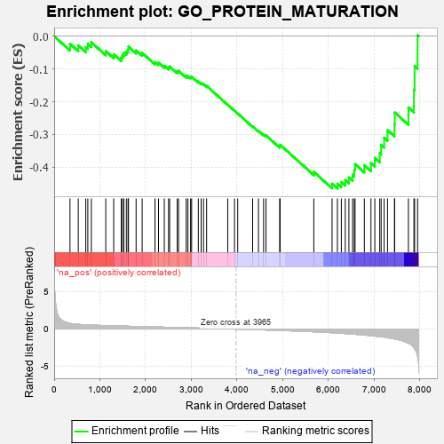
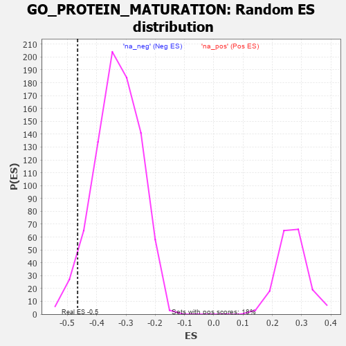

| | | Dataset | 7d |
| Phenotype | NoPhenotypeAvailable |
| Upregulated in class | na_neg |
| GeneSet | GO_PROTEIN_MATURATION |
| Enrichment Score (ES) | -0.46516496 |
| Normalized Enrichment Score (NES) | -1.4134489 |
| Nominal p-value | 0.042579077 |
| FDR q-value | 0.3042376 |
| FWER p-Value | 1.0 |
Table: GSEA Results Summary

Fig 1: Enrichment plot: GO_PROTEIN_MATURATION
Profile of the Running ES Score & Positions of GeneSet Members on the Rank Ordered List
| PROBE | GENE SYMBOL | GENE_TITLE | RANK IN GENE LIST | RANK METRIC SCORE | RUNNING ES | CORE ENRICHMENT | | 1 | CLN5 | | | 346 | 0.751 | -0.0229 | No |
| 2 | HTRA2 | | | 527 | 0.621 | -0.0284 | No |
| 3 | ATP23 | | | 691 | 0.562 | -0.0333 | No |
| 4 | ISCA2 | | | 736 | 0.548 | -0.0236 | No |
| 5 | GLRX3 | | | 813 | 0.529 | -0.0185 | No |
| 6 | SRC | | | 1128 | 0.459 | -0.0455 | No |
| 7 | CCS | | | 1302 | 0.427 | -0.0554 | No |
| 8 | NFU1 | | | 1467 | 0.396 | -0.0651 | No |
| 9 | SPCS2 | | | 1493 | 0.391 | -0.0574 | No |
| 10 | LIAS | | | 1524 | 0.387 | -0.0505 | No |
| 11 | SDE2 | | | 1579 | 0.378 | -0.0468 | No |
| 12 | BIRC8 | | | 1615 | 0.372 | -0.0409 | No |
| 13 | TASP1 | | | 1625 | 0.370 | -0.0317 | No |
| 14 | LIPT2 | | | 1792 | 0.339 | -0.0433 | No |
| 15 | MMS19 | | | 1924 | 0.317 | -0.0510 | No |
| 16 | HM13 | | | 2205 | 0.276 | -0.0787 | No |
| 17 | AIP | | | 2281 | 0.263 | -0.0809 | No |
| 18 | OMA1 | | | 2408 | 0.244 | -0.0900 | No |
| 19 | KAT2B | | | 2502 | 0.226 | -0.0955 | No |
| 20 | SPG7 | | | 2525 | 0.223 | -0.0921 | No |
| 21 | DDI2 | | | 2691 | 0.200 | -0.1073 | No |
| 22 | LMF2 | | | 2720 | 0.196 | -0.1054 | No |
| 23 | ISCA1 | | | 2887 | 0.168 | -0.1217 | No |
| 24 | ERO1A | | | 2925 | 0.162 | -0.1219 | No |
| 25 | PCSK5 | | | 2983 | 0.152 | -0.1249 | No |
| 26 | PISD | | | 3006 | 0.149 | -0.1235 | No |
| 27 | CISD3 | | | 3152 | 0.130 | -0.1383 | No |
| 28 | PRDX4 | | | 3214 | 0.120 | -0.1426 | No |
| 29 | MIPEP | | | 3266 | 0.111 | -0.1460 | No |
| 30 | RFX4 | | | 3334 | 0.099 | -0.1517 | No |
| 31 | SPCS1 | | | 3795 | 0.028 | -0.2091 | No |
| 32 | KLK13 | | | 3944 | 0.003 | -0.2277 | No |
| 33 | PARP1 | | | 4014 | -0.010 | -0.2361 | No |
| 34 | GLRX5 | | | 4340 | -0.066 | -0.2754 | No |
| 35 | LRRK2 | | | 4467 | -0.087 | -0.2889 | No |
| 36 | CMA1 | | | 4580 | -0.114 | -0.2998 | No |
| 37 | GCSH | | | 4633 | -0.125 | -0.3029 | No |
| 38 | CASP1 | | | 4932 | -0.185 | -0.3355 | No |
| 39 | EP300 | | | 4941 | -0.186 | -0.3313 | No |
| 40 | CASP8 | | | 5678 | -0.369 | -0.4141 | No |
| 41 | CALR | | | 6077 | -0.499 | -0.4505 | Yes |
| 42 | ATP7B | | | 6194 | -0.535 | -0.4503 | Yes |
| 43 | IFT52 | | | 6280 | -0.566 | -0.4453 | Yes |
| 44 | BIRC3 | | | 6366 | -0.603 | -0.4393 | Yes |
| 45 | CIAO1 | | | 6445 | -0.638 | -0.4314 | Yes |
| 46 | ACE | | | 6526 | -0.674 | -0.4227 | Yes |
| 47 | DOHH | | | 6563 | -0.690 | -0.4081 | Yes |
| 48 | CLN3 | | | 6580 | -0.699 | -0.3907 | Yes |
| 49 | C2CD3 | | | 6783 | -0.802 | -0.3939 | Yes |
| 50 | DISP1 | | | 6928 | -0.887 | -0.3874 | Yes |
| 51 | ECE2 | | | 7012 | -0.945 | -0.3716 | Yes |
| 52 | FKRP | | | 7120 | -1.009 | -0.3571 | Yes |
| 53 | SPON1 | | | 7151 | -1.035 | -0.3321 | Yes |
| 54 | KLKB1 | | | 7216 | -1.090 | -0.3099 | Yes |
| 55 | ASTL | | | 7290 | -1.159 | -0.2869 | Yes |
| 56 | CASP2 | | | 7442 | -1.322 | -0.2692 | Yes |
| 57 | GGT1 | | | 7447 | -1.329 | -0.2327 | Yes |
| 58 | CASP3 | | | 7747 | -1.902 | -0.2176 | Yes |
| 59 | ECE1 | | | 7867 | -2.498 | -0.1632 | Yes |
| 60 | CHAC1 | | | 7882 | -2.633 | -0.0917 | Yes |
| 61 | XIAP | | | 7947 | -3.696 | 0.0030 | Yes |
Table: GSEA details [plain text format]

Fig 2: GO_PROTEIN_MATURATION: Random ES distribution
Gene set null distribution of ES for GO_PROTEIN_MATURATION